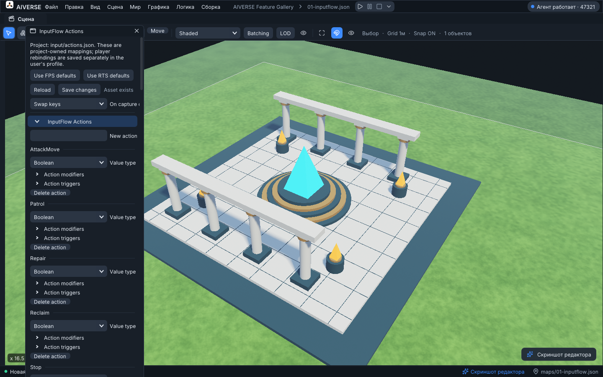

01В редакторе
InputFlow
Управление как данные

Что посмотрели
Профиль RTS загружен и сохранён из InputFlow Actions. Действия, типы значений, модификаторы и триггеры доступны в редакторе.
Граница проверки
Сохранён input/actions.json. Переназначение клавиш во время игры и геймпад в этой сессии не проверялись.
Изменения · PR #20